Aula 3:
Transformada Z, Modelagem e Identificação de Sistemas
Prof. Marcos Rogério Fernandes
20 de agosto de 2026
Malha de controle digital
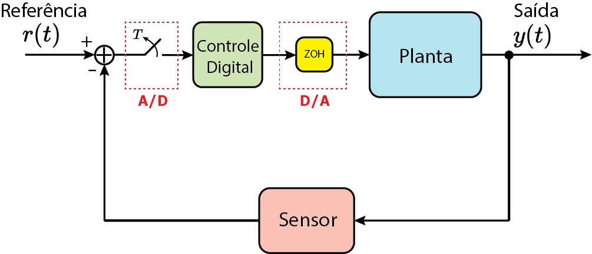
Ciclo do Projeto de Controle
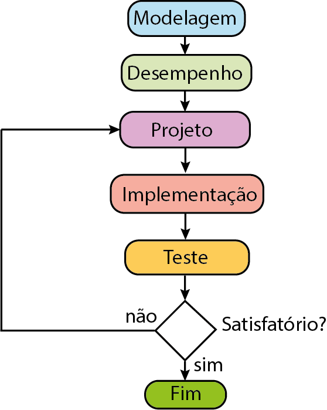
Objetivos
Os objetivos dessa aula são entender:
- Transformada Z e Propriedades;
- Modelagem de sistemas dinâmicos;
- Métodos de Discretização;
- Conversão de EDO em Eq. à Diferenças
- Identificação paramétrica;
- Exemplos;
Sinal contínuo: Transformada de Laplace
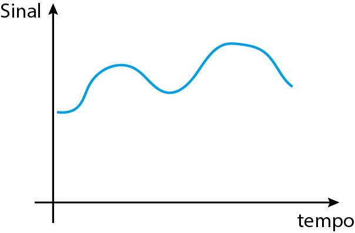
Sinal contínuo: Transformada de Laplace
Transformada de Laplace: exemplo
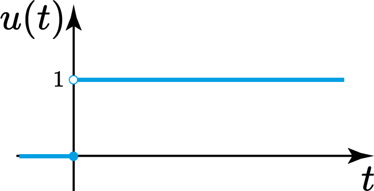
$$ U(s)=\frac{1}{s} $$Sinal em tempo discreto
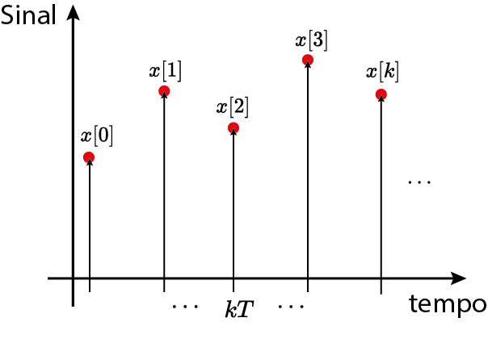
Sinal amostrado
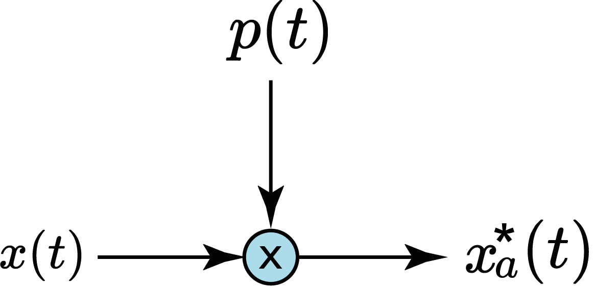
Transformada de Laplace do sinal amostrado
Transformada de Laplace do sinal amostrado
$$ z=e^{sT} $$
Transformada Z
$$ \mathcal{Z}\{x[k]\}= \sum_{k=-\infty}^\infty x[k]z^{-k}=X(z) $$
em que $\mathcal{D}\subseteq \mathbb{C}$ é o domínio da transformada Z de $x[k]$: $$ \mathcal{D}=\{z\in\mathbb{C} : X(z) \text{ existe}\} $$Série Geométrica
Considere $z \in \mathbb{C}$. Se $|z|<1$, então
$$ \sum_{k=0}^\infty z^k = \frac{1}{1-z} $$
Região de Convergência (ROC)

Plano-Z
Exemplo ($k\ge0$)
Exemplo ($k\ge0$)
$$ \mathcal{Z}\Bigl\{\Bigl(\frac{1}{2}\Bigr)^k\Bigr\}=\frac{z}{z-\frac{1}{2}},\quad k\in\mathbb{N} $$
em que $$ \mathcal{D}=\{z\in\mathbb{C}: |z|>\frac{1}{2}\} $$Exemplo ($k\ge0$)
Plano-Z
Transformada Z (Unilateral)
$$ \mathcal{Z}\{x[k]\}= \sum_{k=0}^\infty x[k]z^{-k}=X(z) $$
em que $\mathcal{D}\subseteq \mathbb{C}$ é o domínio da transformada Z de $x[k]$: $$ \mathcal{D}=\{z\in\mathbb{C} : X(z) \text{ existe}\} $$Degrau unitário
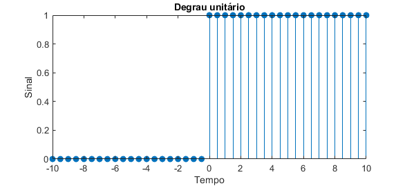
Degrau unitário
$$ \mathcal{Z}\{u[k]\}=\frac{z}{z-1},\quad |z|>1 $$
Degrau unitário
Plano-Z
Exponencial
Exponencial
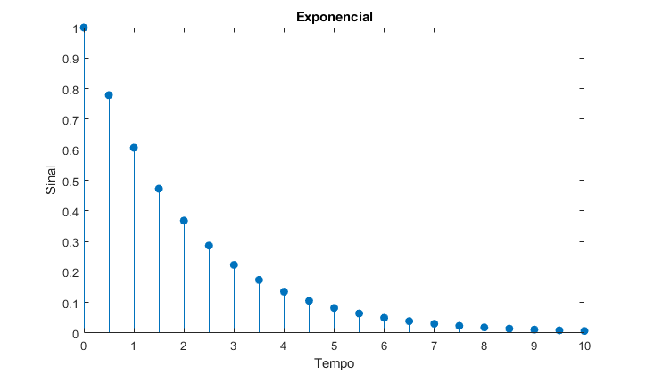
Exponencial
$$ F(z)=\frac{z}{z-a},\quad \mathcal{D}=\{z\in\mathbb{C}: |z|>|a|\} $$
Exponencial
Plano-Z
Exponencial: exemplo
$ x(t)=e^{-2t}u(t) $
$$ \mathcal{Z}\{x(kT)\}=\frac{z}{z-e^{-2T}},\quad |z| > e^{-2T} $$
Impulso unitário
$$ \mathcal{Z}\{\delta[k]\}=1,\quad \mathcal{D}=\mathbb{C} $$
Cosseno
$$ f[k]=\cos(\omega Tk)u[k],\quad \omega \in \mathbb{R} $$
Cosseno
Cosseno
A transformada Z é, então, dada por
$$ \mathcal{Z}\{\cos(\omega Tk)u[k]\}=\frac{z(z-\cos(\omega T))}{z^2-2\cos(\omega T)z+1},\quad |z|>1 $$
Propriedades da Transformada Z
- Linearidade: $$ \mathcal{Z}\{\alpha x[k]+\beta y[k]\}=\alpha X(z)+\beta Y(z) $$
- Atraso no tempo $$ \mathcal{Z}\{x[k-l]\}=z^{-l}X(z) $$
- Avanço no tempo $$ \mathcal{Z}\{x[k+l]\}=z^{l}X(z) $$
Propriedades da Transformada Z
- Amortecimento:
$ \mathcal{Z}\{a^{k}x[k]\}=X(az),\quad |a|< 1 $
-
Diferenciação:
$ \mathcal{Z}\{kx[k]\}=-z\frac{dX}{dz} $
- Convolução:
$ \mathcal{Z}\{x[k]\ast y[k]\}=X(z)Y(z) $
Soma de sequências
$$ X(1)=\sum_{k=0}^\infty x[k] $$
Teorema do Valor Inicial
$$ x[0]=\lim_{z\to\infty} X(z) $$
Teorema do Valor Final
Seja $x[k]$ uma função com Transformada Z dada por $X(z)$. Se $\lim_{k\to\infty}x[k]$ existe, então
$$ \lim_{k\to\infty} x[k]= \lim_{z\to 1} (z-1)X(z) $$
Eq. à Diferenças
$$ \sum_{i=0}^n \alpha_i y[k-i] = \sum_{i=0}^m \beta_i x[k-i] $$
Exemplo: $$ 3y[k-2]+2y[k-1]+y[k]=x[k]-2x[k-1] $$
Eq. à Diferenças
$$ \sum_{i=0}^n \alpha_i y[k-i] = \sum_{i=0}^m \beta_i x[k-i] $$
Exemplo: $$ 3z^{-2}Y(z)+2z^{-1}Y(z)+Y(z)=X(z)-2z^{-1}X(z) $$
Eq. à Diferenças
$$ \sum_{i=0}^n \alpha_i y[k-i] = \sum_{i=0}^m \beta_i x[k-i] $$
Exemplo: $$ (3z^{-2}+2z^{-1}+1)Y(z)=(1-2z^{-1})X(z) $$
Eq. à Diferenças
$$ \sum_{i=0}^n \alpha_i y[k-i] = \sum_{i=0}^m \beta_i x[k-i] $$
Exemplo: $$ \frac{Y(z)}{X(z)}=\frac{(1-2z^{-1})}{(3z^{-2}+2z^{-1}+1)}=G(z) $$
Eq. à Diferenças
A Transformada Z permite obter uma representação na forma de uma função racional da Eq. à Diferenças!
$$ G(z)=\frac{Y(z)}{X(z)}=\frac{\beta_mz^{-m}+\cdots+\beta_1z^{-1}+\beta_0}{\alpha_nz^{-n}+\cdots+\alpha_1z^{-1}+\alpha_0} $$
Usualmente, considera-se $\alpha_0=1$ (normalização)
Transformada Z Inversa
$$ \mathcal{Z}^{-1}\{X(z)\}=x[k] $$
Modelagem de Sistemas Dinâmicos (SLIT)
EDO $$ \sum_{i=0}^n\alpha_i\frac{d^i y}{dt^i}=\sum_{i=0}^m\beta_i\frac{d^i u}{dt^i} $$
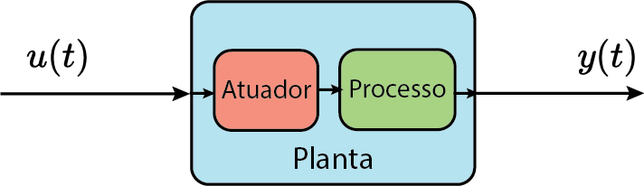
Abordagens
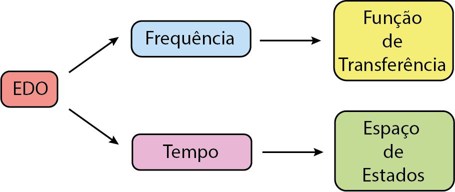
Abordagem no domínio da Frequência
Exemplo: Sistema de 1° Ordem
Circuito RC, RL, Sistemas térmicos, etc
Exemplo: Sistema de 2° Ordem
Circuito RLC, Sistema massa-mola, etc
Discretização
$$ G_d(z)=? $$
- Impulso-invariante (Z-exata);
- Degrau-invariante (ZOH)
- Mapeamento casado de pólos e zeros;
- Equivalência por integração numérica;
Discretização Impulso-invariante
Impulso-invariante:
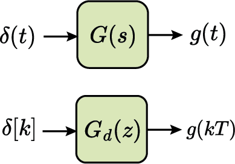
Discretização Impulso-invariante
Impulso-invariante:
$$ g(t)=\mathcal{L}^{-1}\{G(s)\}\Rightarrow G_d(z)=\mathcal{Z}\{g(kT)\} $$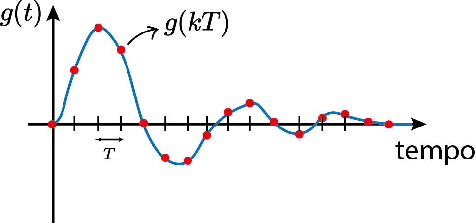
Discretização Impulso-invariante
Impulso-invariante:
$$ g(t)=\mathcal{L}^{-1}\{G(s)\}\Rightarrow G_d(z)=\mathcal{Z}\{g(kT)\} $$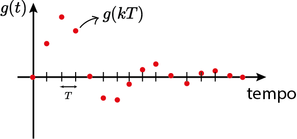
Discretização Impulso-invariante
Impulso-invariante:
$$ \mathcal{Z}^{-1}\{G_d(z)\}=\mathcal{L}^{-1}\{G(s)\}\Bigr|_{t=kT} $$Discretização
Transformada Z exata
Usar Tabelas de Transformada Z!
Exemplos: $$ G(s)=\frac{1}{s} \Rightarrow G_d(z)=\frac{z}{z-1} $$
etc...
Transformada Z exata
Transformada Z exata
Discretização Degrau-Invariante
Degrau-Invariante:
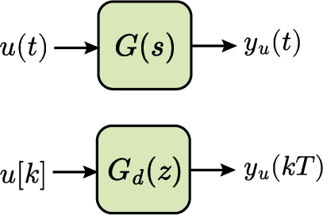
Discretização Degrau-Invariante
Degrau-Invariante:
$$ \mathcal{Z}\{\frac{1}{s}\}=\frac{z}{z-1}=\frac{1}{1-z^{-1}} $$Discretização Degrau-Invariante
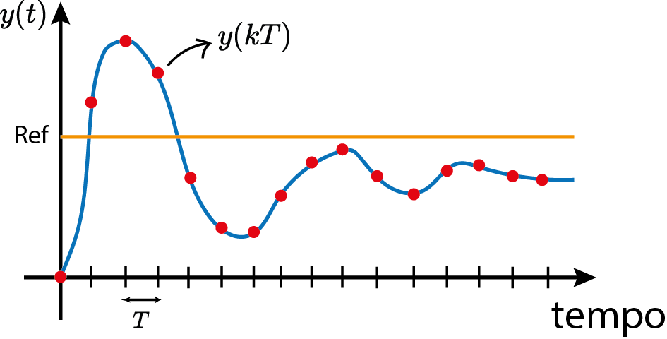
Discretização Degrau-Invariante
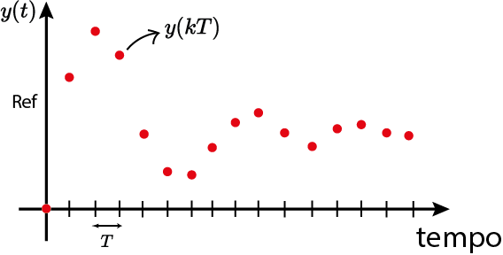
Discretização Degrau-Invariante
Discretização Degrau-Invariante
Discretização Degrau-Invariante
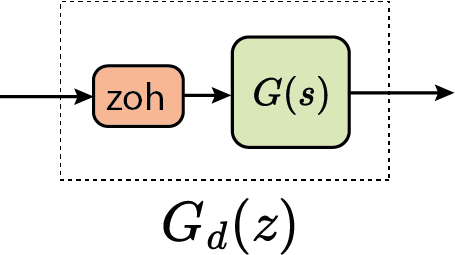
$ ZOH(s)=\frac{1-e^{-sT}}{s} $
Reconstrução via ZOH
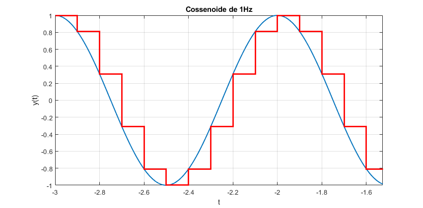
Degrau-Invariante
Qual a FT discretizada com $T=0.1s$?
Mapeamento casado de pólos e zeros
$$ G_d(z)=K\frac{\prod_{i=1}^m (z-e^{b_iT})}{\prod_{i=1}^n (z-e^{p_iT})} $$
Mapeamento casado de pólos e zeros
O ganho $K$ é escolhido de forma a preservar o ganho do sistema contínuo em uma frequência de interesse, por exemplo:
$$ G(s)|_{s=0}=G_d(z)|_{z=1} $$
Mapeamento casado de pólos e zeros
Equivalência por integração numérica
$$ y(t)=\int_{-\infty}^t u(\tau)d\tau $$
Como aproximar essa integral?- Método Euler-Forward;
- Método Euler-Backward;
- Método Tustin.
Método Euler-Forward
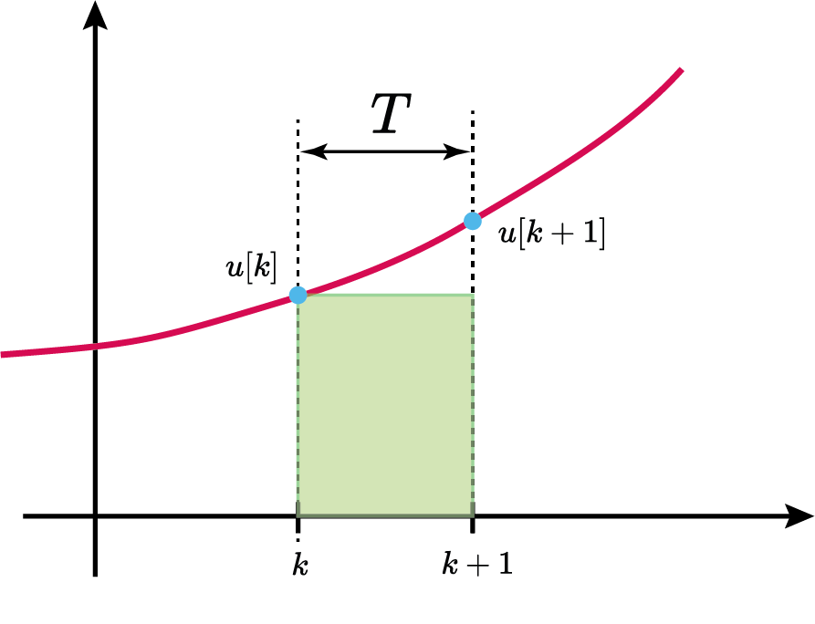
Método Euler-Forward
Método Euler-Forward
Método Euler-Forward
Método Euler-Backward

Método Euler-Backward
Método Euler-Backward
$$ s=\frac{z-1}{zT} $$
Método Euler-Backward
Método Tustin (Bilinear)

Método Tustin (Bilinear)
Método Tustin (Bilinear)
Método Tustin (Bilinear)
Equivalência por integração numérica
| Euler-Forward: $$ s=\frac{z-1}{T} $$ | Euler-Backward: $$ s=\frac{z-1}{Tz} $$ | Tustin (Bilinear): $$ s=\frac{2}{T}\frac{z-1}{z+1} $$ |
|
|
Exemplo: Degrau-Invariante
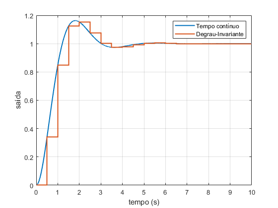
Exemplo: Tustin (Bilinear)
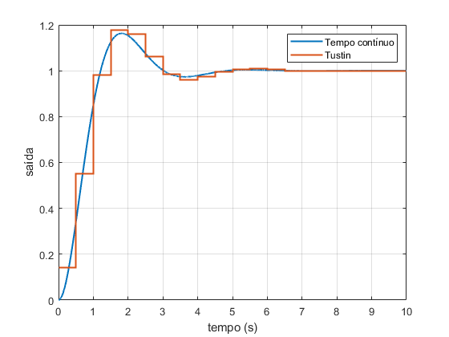
Identificação de Sistemas
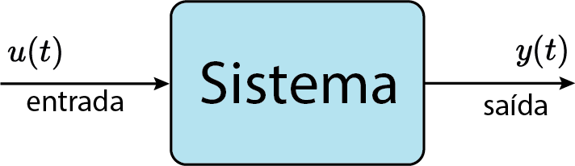
Identificação de sistemas
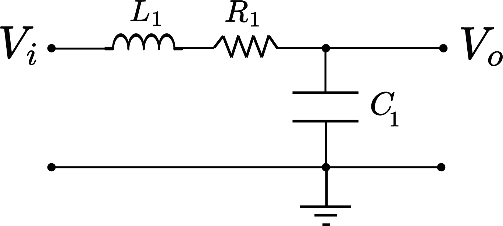
$$ LC\frac{d^2v_o}{dt^2}+RC\frac{dv_o}{dt}+v_o(t)=v_i(t) $$
Identificação de sistemas
$$ \underbrace{LC}_{\alpha_2}\frac{d^2v_o}{dt^2}+\underbrace{RC}_{\alpha_1}\frac{dv_o}{dt}+\underbrace{1}_{\alpha_0}v_o(t)=\underbrace{1}_{\beta_0}v_i(t) $$
Identificação de sistemas
$$ \frac{V_o(s)}{V_i(s)}=\frac{\frac{1}{LC}}{s^2+\frac{R}{L}s+\frac{1}{LC}}=G(s) $$
Identificação de sistemas
$$ G_d(z)=G(s)|_{s=\frac{z-1}{zT}},\quad T=0.1s $$
Exemplo: Sistema 2° Ordem
Exemplo: Sistema 2° Ordem
Identificação de sistemas
$\rightarrow h_k $ é o vetor de regressor associado à $y_k$
$\rightarrow \theta$ é o vetor de parâmetros do modelo.
Identificação de sistemas
Identificação de sistemas
Erro Médio Quadrático (EMQ): $$ \hat{\theta}=\arg \min_\theta \|y-\underbrace{H\theta}_{\hat{y}}\|^2_2 $$
Identificação de sistemas
Erro Médio Quadrático (EMQ): $$ \hat{\theta}=(H^T H)^{-1}H^Ty, \quad \text{rank}(H)=n $$
Identificação de sistemas
Modelagem do sistema
$$ y[k]=-c_2y[k-2]+c_1y[k-1]+d_0u[k] $$
Como obter os parâmetros associados ao sistema real?Identificação de sistemas
Identificação de sistemas
- Degrau (regime estacionário);
- Senoide (ressonância);
- PRBS (persistentemente excitante).
Identificação de sistemas
Identificação de sistemas
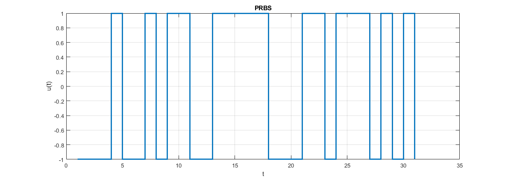
Identificação de sistemas
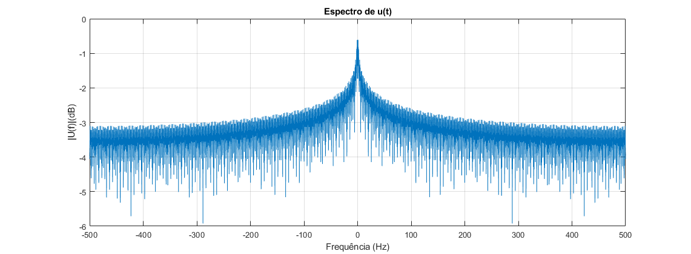
Exemplo de Identificação de sistemas
Próxima aula teórica
Análise de Estabilidade em tempo discreto
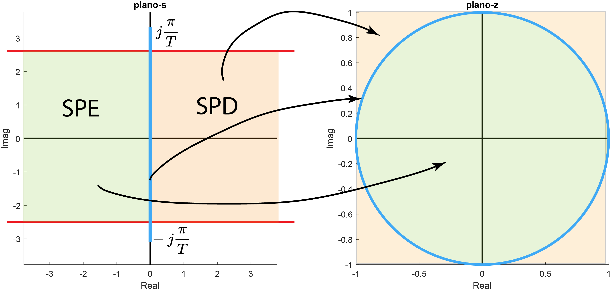